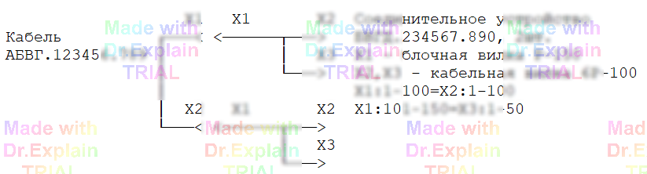

2.2 Соединительное устройство
Для подключения ОК к АСК (см. п. 1) из имеющихся выбрали подходящие СУ (или разработали и изготовили новые).
На рисунке представлено соединительное устройство:

Для подключения ОК к АСК (см. п. 1) из имеющихся выбрали подходящие СУ (или разработали и изготовили новые).
На рисунке представлено соединительное устройство:
